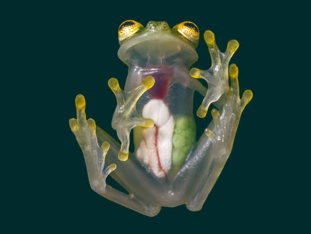

this is pistachio, the sparkly frog, founder of Pistachio's cave
Where the frogs be frogs.

Did you know that frogs absorb water rather than drink it?
Frogs are an integral part of many ecosystems, but in many places they're moving closer to extinction. Studies and analysis shows that Australia can expect to lose up to 20 percent of the frog population in the upcoming years, to not only climate change but to a devastating fungal disease ravaging all around the world, known as amphibian chytrid fungus (Batrachochytrium dendrobatidis). The fungus has severely damaged the population numbers of over 500 frog species globally,and decimated at least 90 amphibian species.
